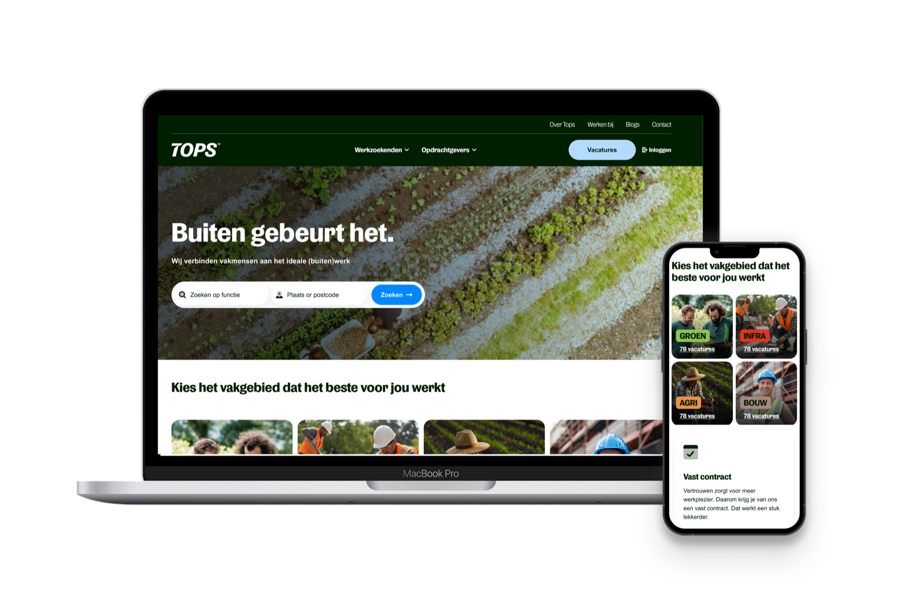
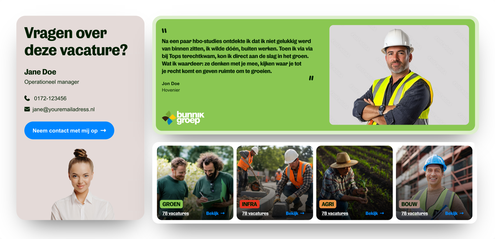
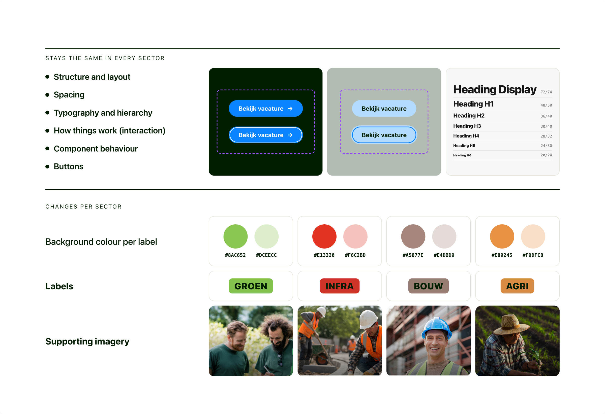
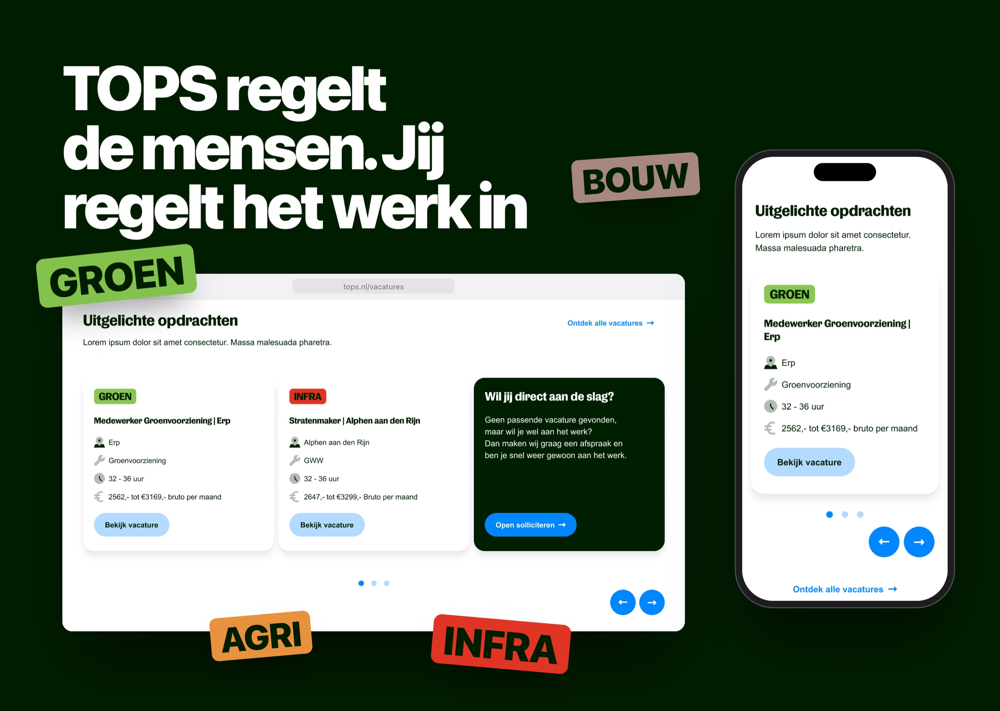
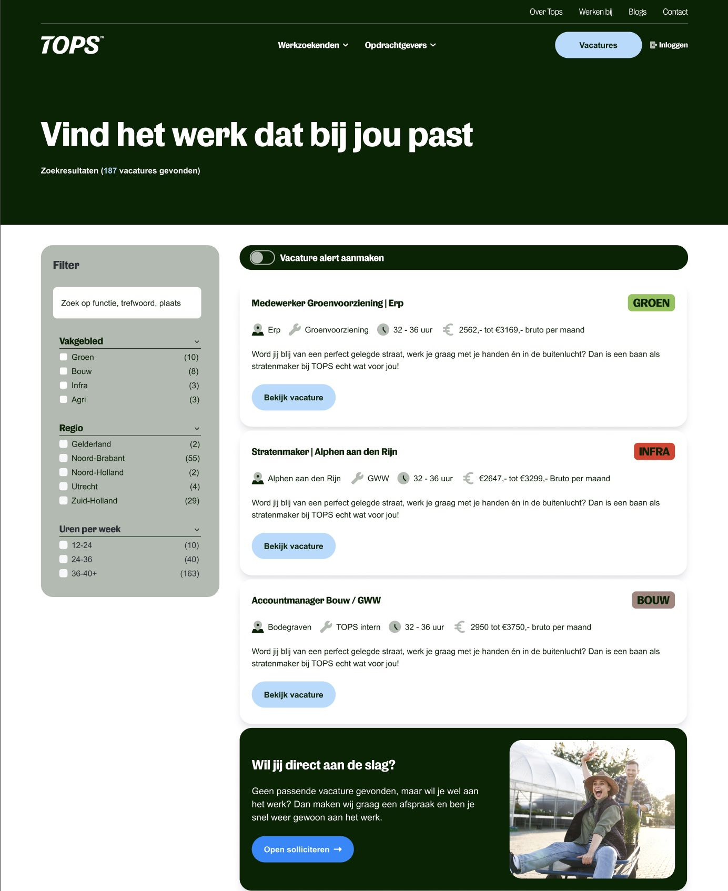
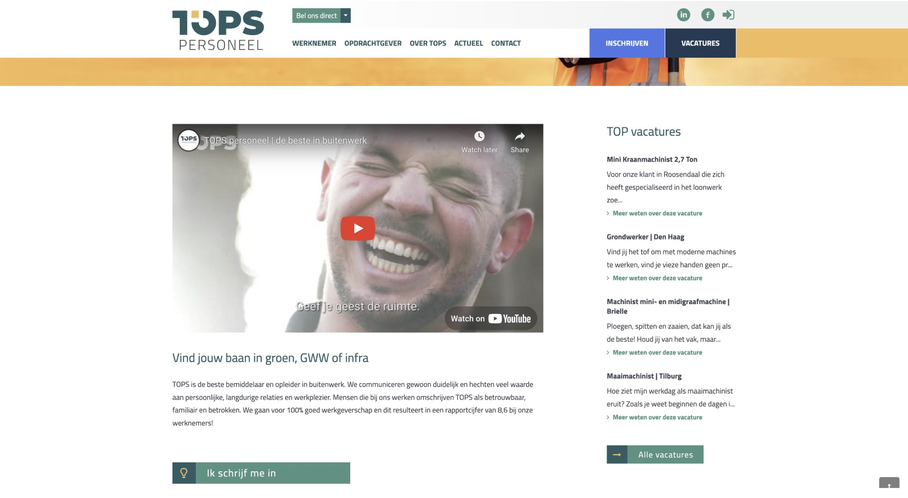

One brand, four sectors, a system that grows
Designing a scalable digital experience for a multi-label recruitment brand

01 · Outcome
One recruitment brand, four sector identities, and a block library that lets the website grow without a redesign
After handoff, the TOPS team built a whole new Professionals section and extra Vakschool course pages on their own, without a designer. They assembled them in Storyblok from the blocks I designed and our developers built.
That independence comes from a scalable UX/UI foundation:
One consistent TOPS experience on desktop and mobile
Four sector identities Groen, Agri, Infra and Bouw, on one shared system
A library of reusable blocks and patterns, ready to use in Storyblok
Designs for every key journey job seekers, career changers, employers and blog readers
02 · Context & The problem
One website, many audiences
TOPS is a Dutch recruitment and staffing company with four sector labels: Groen, Agri, Infra and Bouw. One website serves six audiences: job seekers, career changers and students looking at green-sector training, temporary workers, potential clients, existing partners, and people who want to work at TOPS itself. The company was in the middle of a brand refresh.
Job seekers landed on a homepage that spoke to everyone at once and had to dig for vacancies, and the TOPS team couldn't add a page without a designer starting from scratch.
My UX audit of the old site showed why candidates struggled:
No primary action
The homepage had many CTAs and none stood out. Two of them, "Bekijk alle vacatures" and "Vacatures", led to the same page.
Overwhelming navigation
Too many options, an oversized logo, and almost no feedback on hover or click.
Hidden vacancies
Job listings were buried in text. People scan before they read, so the listings were easy to miss entirely.
No social proof
There were no visible reviews to build trust.
Scroll, hover and swipe inside the screens The original homepage
Every page under a label needed that label's colour, while the site as a whole still had to read as one TOPS.
So the real question was: How do we build one recognisable brand
that the TOPS team can keep extending on their own?
03 · Key decisions
Three decisions that shaped the site
-
Blocks, not pages
Because
The TOPS team would build pages in Storyblok themselves. A fixed set of pages would be outdated the first time they needed a new one.
-
One brand across four sectors
Because
Four designs would have felt like four unrelated sites and multiplied the work for design and development by four.
-
Vacancies first
Because
Finding a job is why most people visit, yet the audit showed vacancies were the easiest thing to miss. Job seekers decide in seconds on location, hours and pay.
04 · System: blocks, not pages
Designing the building blocks, not the pages
Because pages would be assembled by the team, not by me, I stress-tested every block: short and long headings, different text lengths and image ratios, one or two buttons, three breakpoints, all four sector colours. I also checked how blocks sat next to each other, so any combination still produced a clear page.

05 · Expression: one system, four sectors
One foundation, four sector experiences
A big part of the work was taking one component and making it work for Groen, Agri, Infra and Bouw (Green, Agriculture, Infrastructure and Construction). The tempting option was four separate designs. That would have made the website feel like four unrelated sites, and multiplied the work for designers and developers by four.
Structure, spacing, typography, buttons and interactions stay identical everywhere; only background colours, labels and imagery change per sector.
The sector colours weren't decoration. They became part of the navigation: a quiet, constant signal of which part of TOPS you're in.

06 · Structure: vacancies first
Where a visitor becomes an applicant
For job seekers, vacancies became the one clear primary action:
Homepage A search in the hero, sector tiles showing how many jobs each label has open, and a permanent "Alle vacatures" button in the header. The duplicate CTA went.
Lister page Filters for location and postcode, working hours and distance.
Vacancy page Answers the seven questions a job seeker asks up front (what, where, hours, pay, experience, tasks, how to apply), with Apply visible the whole way down.
Social proof The homepage also shows what the old site lacked. Workers placed by TOPS rate it 8+, and a strip of client logos shows who TOPS works with.
Navigation The old header packed an oversized logo, a "Bel ons direct" dropdown, five menu items, social icons and two equal-weight buttons (Inschrijven and Vacatures) into one bar. The new one groups the site by audience under Werkzoekenden, Opdrachtgevers and TOPS Vakschool, with the four labels underneath each. Over TOPS, Werken bij, Blogs, FAQ and Contact moved to a separate top bar, and one button stays primary: Alle vacatures.


TOPS · lister page redesign
-
Category tags
Groen, Infra and Bouw labels make each vacancy readable at a glance.
-
Filters with counts
Vakgebied, regio and hours, each showing how many vacancies remain.
-
Job alert
One toggle to receive new vacancies.
-
Open application
A way in when no vacancy fits yet.

07 · What didn't make it to launch
The job alert
I designed a job alert for the lister page, so job seekers didn't have to keep coming back to search. But the vacancies live in TOPS's HelloFlex system, not in the website, so alerts needed an extra integration. With a fixed go-live date, we prioritised the core job search and application flow, and the alert was moved out of the first release. It was added after launch, using the design I had already made.
08 · What I learned
Consistency doesn't mean making everything look identical
The project pushed me beyond individual screens, to see how brand, information architecture, components, sector identities, user journeys and conversion connect. The real work was balancing three forces:
Consistency
Users recognise one TOPS everywhere and understand how it works.
Differentiation
Each sector has its own identity and feels relevant to its audience.
Scalability
The design works across many pages without adding complexity for designers and developers.
The most valuable thing I designed wasn't a page. It was the rules behind the pages: enough structure to keep the experience consistent, and enough freedom for TOPS to grow.